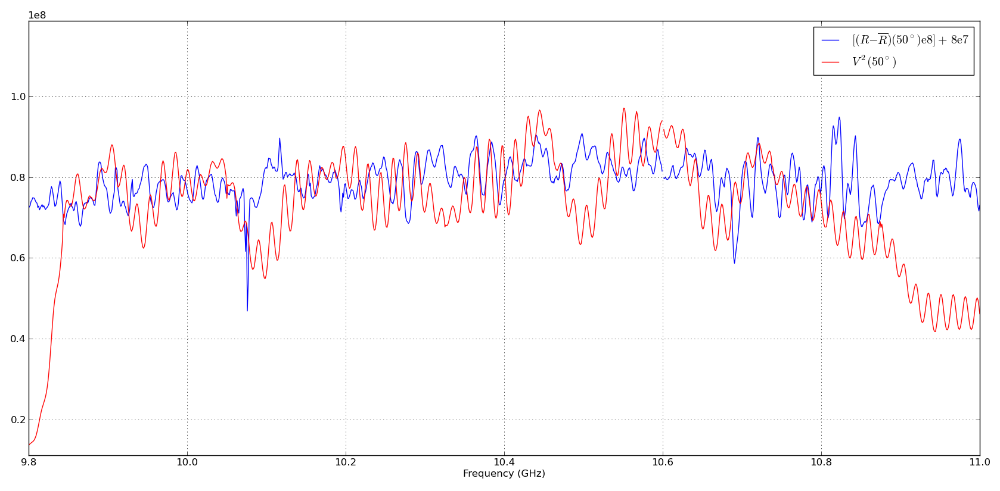
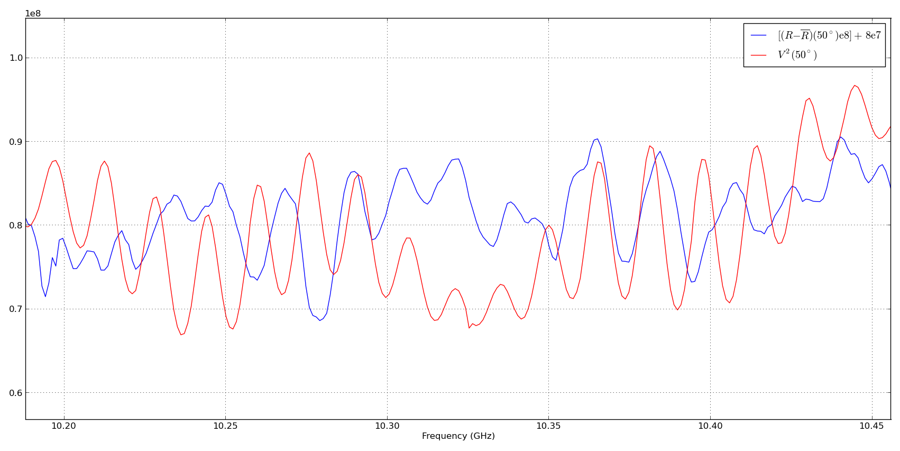
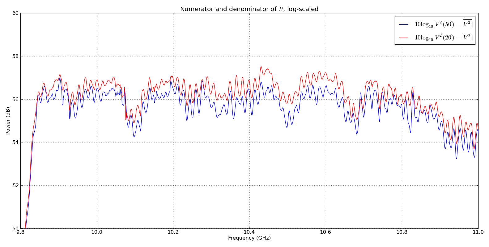
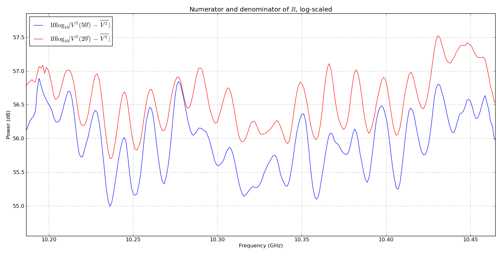

July 8, 2016 - Effect of standing waves on the measured ratio
Jonathan Kyl
Intro
We compare the ratio\begin{equation}R\equiv\frac{V^2(\theta_z)-\overline{V^2}}{V^2(\theta_z=20^\circ)-\overline{V^2}}\end{equation}to the quantity $V^2(\theta_z)$, in order to visually determine whether or not standing waves in the measured spectrum are a linear term in gain. If they are, we would expect to see them cancelled out in $R$.
We also compare the numerator of $R$ to the denominator on a log scale in order to see how the standing waves scale.
Results
Figure 1 shows the spectrum $V^2(50^\circ)$ in red, and the mean-subtraced ratio $R$ in blue, with an added bias and scale factor. Both are averaged over 600 scans. The bias and scaling are just to make visual comparison between the two easier.
| Fig. 1 - |
Comparison of standing waves in $V^2$ and $R$ |
|---|
| a. Full range |
b. Detail |
| |
 |
 |
|
Figure 2 shows the numerator of $R(50^\circ)$ averaged over the same 600 scans in red, and the denominator in blue on a log scale. The log scale makes it easy to see where the "difference" (really the ratio $R$ on a linear scale) between the two curves changes.
| Fig. 2 - |
Numerator and denominator of $R$, log-scaled |
|---|
| a. Full range |
b. Detail |
| |
 |
 |
|
Conclusions
- There are definitely waves in $R$ with similar periodicity to those in $V^2$. This is most obvious in figure 1b, where there are about 3 peaks per grid division in both $R$ and in $V^2$.
- The difference (really ratio on a linear scale) between curves in fig. 2 corresponds directly to $R$, and indeed fluctuations in $R$ look like they're correlated with the peaks and troughs of standing waves.
- E.g. at the standing wave peak at ~10.275 GHz seen in 2b, $R$ is at a local minimum.
- Similarly, $R$ is at a local maximum at the standing wave peak at ~10.365 GHz.
- This suggests that the standing waves are not a linear term in frequency. We ought to damp them with attenuators and/or implement RF over fiber.